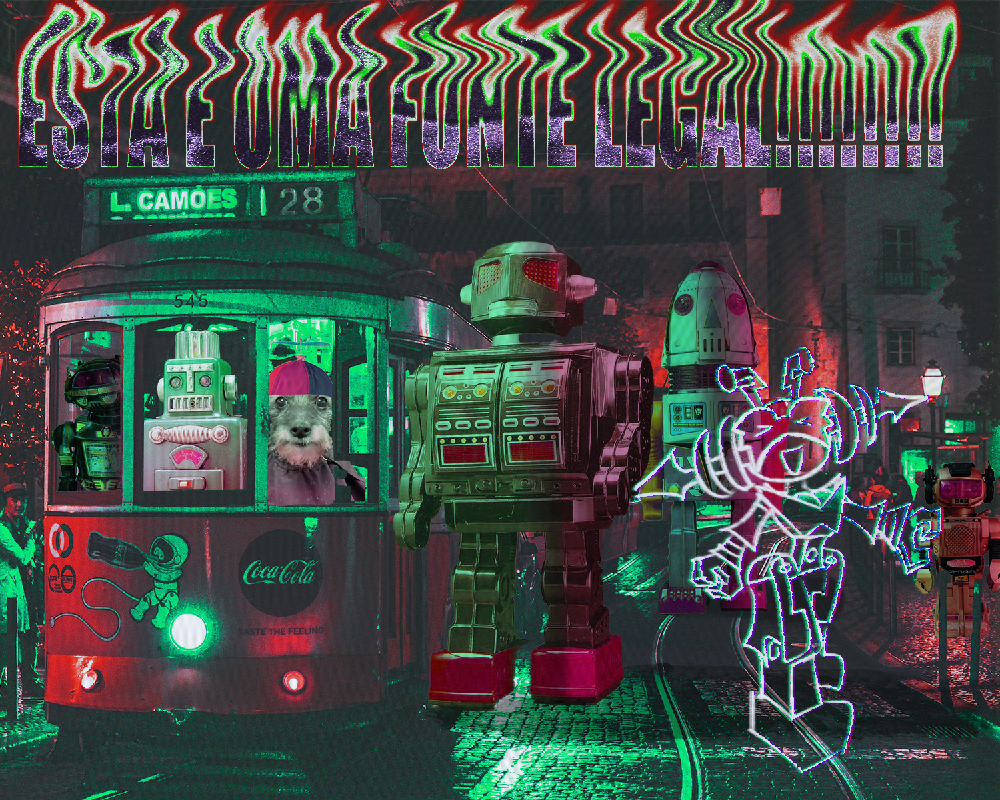

Honestly the only thing that I was really thinking of at the time of making this was that I wanted to fill it with a bunch of vintage toy robots because I had been listening to camellia U.U.F.O. Zhuzhzhalka76. I turned off my brain for this assignment I'll be real. But out it came a cool little drawing of a robot girl which I decided to use for the stop motion project.
For this assignment, I redesigned the previous robot girl and gave her a cool hand phaser. This was like my fourth attempt at modeling, texturing, and animating an entire character. It was super difficult as I had to juggle other projects at the same time. Gladly it came out better than I had expected. I plan to use the same model for a video game project to test the waters of a free game engine called Godot.
I really didn't feel like giving my all for this last assignment as the previous stop motion was given a failing grade for not being live stop motion, despite nothing stating such in the rubric. We discussed and the proffesor gave me a 70 and promised to communicate better, but this was already very demoralizing. Doing the bare minimum, I recorded myself eating a sandwich. Somehow, I found how to make it interesting and came up with a hilarious premise. I spent the rest of that day editing as much as I could out of what I had recorded and came out a funny video that I am unironically proud of.